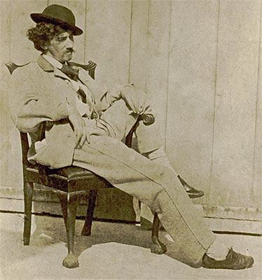
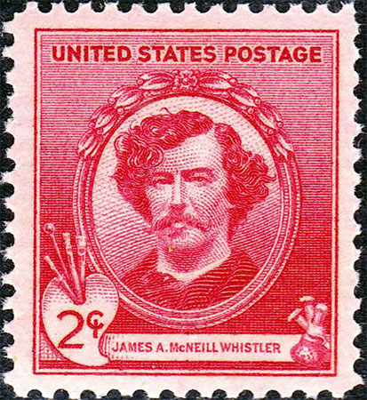
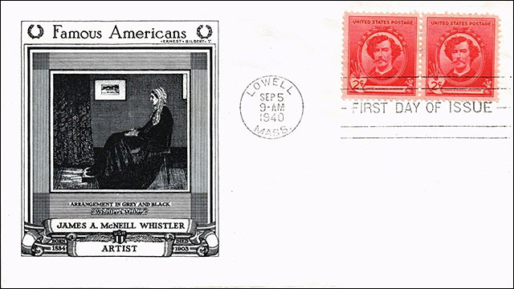
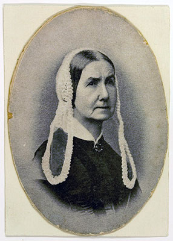
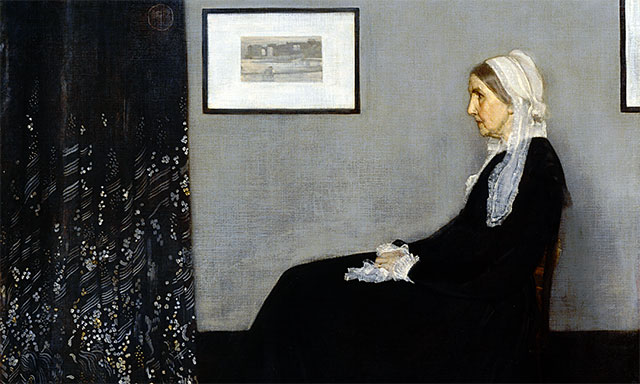
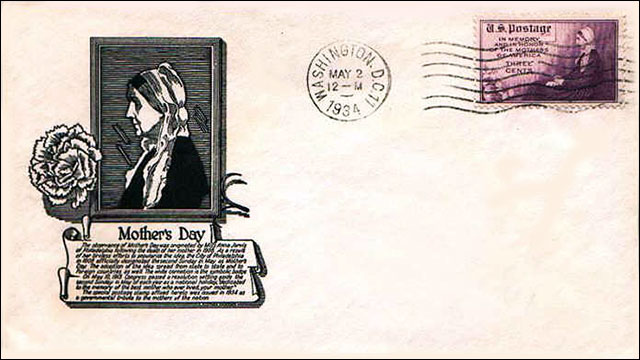
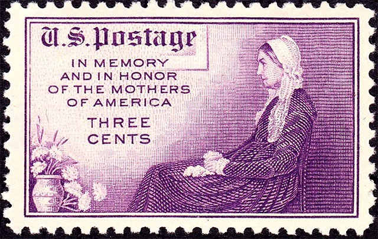
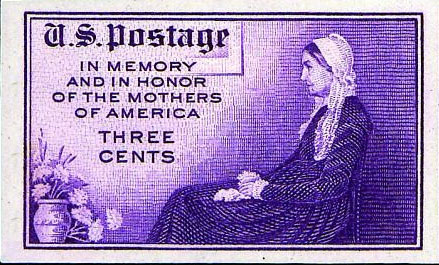
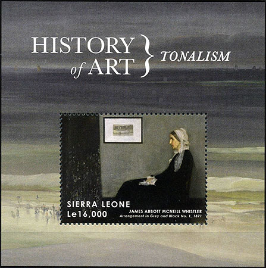

James A. McNeill Whistler's "Portrait of Artists' Mother"
Tinkering with Art on Postal Stamps
Whistler was born in Massachusetts, USA in 1834. He moved with his family to St Petersburg, Russia, in 1843. Trained in Paris as a painter at 21, where he was close to Fantin-Latour and Courbet, he relocated four years later to London where the Royal Academy accepted his first major oil painting.

A picture of the artist, ~ 26 years old, by an unknown photographerMore than a decade later, with the completion of his best-known painting "Arrangement in Grey and Black No.1" (incorrectly known as the Portrait of the Artist's Mother), Whistler successfully combined realist and formalist elements in a manner that was referred to as ‘aestheticism' or 'tonalism'.
In 1940 Whistler was commemorated on an United States postage stamp (Scott # 885) when the U.S. Post Office issued a set of 35 stamps honoring America's famous Authors, Poets, Educators, Scientists, Composers, Artists, and Inventors in the 'Famous Americans Series'.

I show on this page as well the stamp as the First Day Cover of this issue.

Whistler's mother, Anna Matilda McNeill Whistler, born in Wilmington, North Carolina, in 1804, was a literate and well-traveled woman. In 1831 she married Major Whistler and until his death from cholera in 1849 they enjoyed an affluent lifestyle in Russia with their children. After her husband's death, Anna wore black for the rest of her life.

One day in 1871 a model failed to appear, so the young artist turned to his mother and suggested that he do her portrait instead. At first he had her stand, but that proved too tiring to her, and so the famous seated pose was adopted. Due to artist's typically slow and experimental way of working, It took dozens of sittings to complete this painting.

Whistler intended the painting to be a study in color and form, that's why its austere approach is often minimal, even abstract. The artist worked to defy the traditional expectations of narrative art. He used a variety of techniques, playing with contrasts. His mother's darkly colored dress is painted thinly, while his treatment of her hands and face (with areas of pink and yellow) is luminous, showing his Rembrandt's like care in building up colors to illuminate and animate his subject.
In a fire aboard a train during shipping the painting narrowly escaped from being lost forever. The work of art was in 1891 purchased by the French government, the first Whistler work in a public collection. It now housed in the Musée d'Orsay in Paris and it is one of the most famous works by an American artist outside the United States.

The work of art traveled America in a 13-city tour during the Great Depression, which included the 1933 Chicago World's Fair. It was defined as a universal icon of motherhood by the worldwide public, which was not particularly concerned with Whistler's (who died in 1903) aesthetic theories.
In public recognition of its status and popularity, the United States issued in 1934 a postage stamp that commemorated and honored the American mothers. Unfortunately, Whistler's original painting was tinkered with and the stamp was then largely criticized by the true art lovers. A framed painting was removed from the wall and a bowl of flowers was added to the left down corner .

Three printing versions of this stamps are known, as follows:
1. Rotary Press Printing, 1934, May 2, Perf. 11 x 10 ½, Scott 737, deep violet
2. Flat Plate Printing, Perf. 11. Scott 738, deep violet
3. Special Printing, Without Gum, in sheets of 200, Imperf, Scott 754, deep violet, ungummedThe reason why 3. were printed, after Scott catalogue, was the issuance of the 20 stamps (#754 among them) in complete sheets that resulted after the protest of collectors and others at practice of presenting, to certain government officials, complete sheets of unsevered panes, imperforate and generally ungummed. Surely the best thing to do against such abuses.

An untampered version of the stamp appeared on the 2013 Sierra Leone issue:

Note: I don't recommended to collect the above sheet because it isn't listed on the WNS.
Many thanks to the following sources:
• Scott Catalogue Vol. 1, 2009
• https://en.wikipedia.org/wiki/James_Abbott_McNeill_Whistler